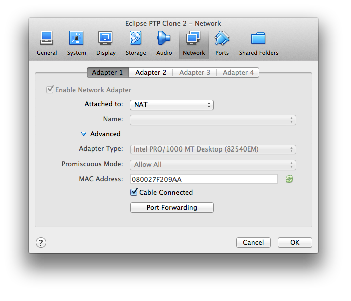
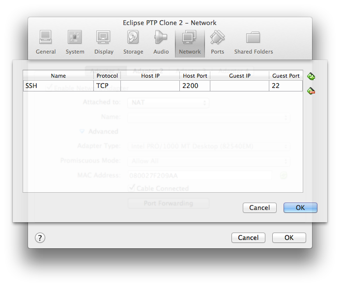
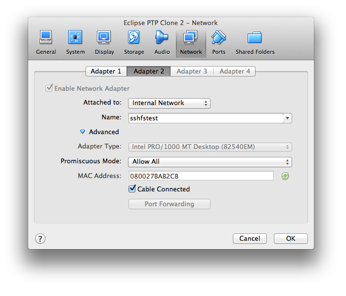

Connect VirtualBox VMs
2014-06-20Here is a way to set up networking in VirtualBox VMs so, that VMs can see each other and also the Internet.
For experiment I used VirtualBox 4.3 on Mac OS X 10.9.
Created two VMs with Ubuntu 14.04.
You will need two Network adapters – one for communication between VMs, and another for communication with the outer world. On both VMs set similar Network settings:
Adapter 1
Attached to : NAT

You can also set Port Forwarding here to be able to access VM from the host. Here I’ve open port 22 for SSH access. I’ll be able to connect with ssh -p 2200 user@localhost from the host.

Adapter 2
Attached to: Internal Network
Name: network-name
Name can be anything, but must be the same on both machines.

Now start you VMs and open a Terminal window. Test with ip addr s command that you have these network interfaces: eth0 and eth1.
Assign a static IP to the interface of Adapter 2 (type “Internal network”). For me it is eth1. The other one should already have IP address, so you can tell which one you need by ip addr s command.
I used addresses 10.0.1.3 and 10.0.1.5. For subnet mask I used 255.255.255.0 (CIDR 24 ), which means that all addresses 10.0.1.X will belong to my virtual network.
Set IP address in terminal window:
$ sudo ip addr add 10.0.1.3/24 dev eth1
and on the other machine:
$ sudo ip addr add 10.0.1.5/24 dev eth1
Test that your first machine is visible from the second:
user@VirtualBox:~$ ip a s
1: lo: <LOOPBACK,UP,LOWER_UP> mtu 65536 qdisc noqueue state UNKNOWN group default
link/loopback 00:00:00:00:00:00 brd 00:00:00:00:00:00
inet 127.0.0.1/8 scope host lo
valid_lft forever preferred_lft forever
inet6 ::1/128 scope host
valid_lft forever preferred_lft forever
2: eth0: <BROADCAST,MULTICAST,UP,LOWER_UP> mtu 1500 qdisc pfifo_fast state UP group default qlen 1000
link/ether 08:00:27:f2:09:aa brd ff:ff:ff:ff:ff:ff
inet 10.0.2.15/24 brd 10.0.2.255 scope global eth0
valid_lft forever preferred_lft forever
inet6 fe80::a00:27ff:fef2:9aa/64 scope link
valid_lft forever preferred_lft forever
3: eth1: <BROADCAST,MULTICAST,UP,LOWER_UP> mtu 1500 qdisc pfifo_fast state UP group default qlen 1000
link/ether 08:00:27:ba:b2:cb brd ff:ff:ff:ff:ff:ff
inet 10.0.1.5/24 scope global eth1
valid_lft forever preferred_lft forever
inet6 fe80::a00:27ff:feba:b2cb/64 scope link
valid_lft forever preferred_lft forever
user@VirtualBox:~$ ping 10.0.1.3
PING 10.0.1.3 (10.0.1.3) 56(84) bytes of data.
64 bytes from 10.0.1.3: icmp_seq=1 ttl=64 time=0.425 ms
64 bytes from 10.0.1.3: icmp_seq=2 ttl=64 time=0.217 ms